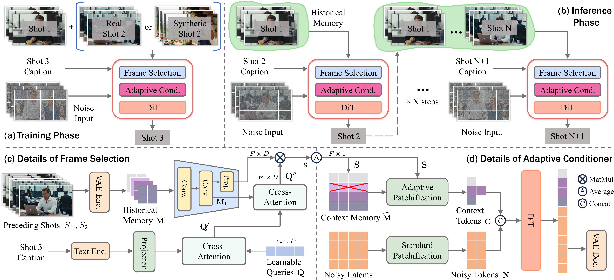
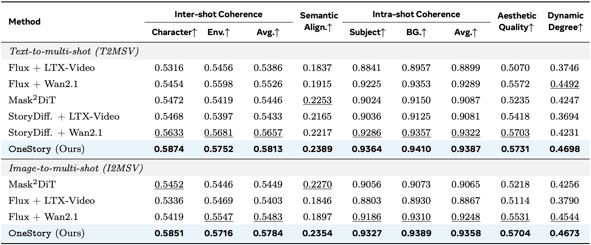

Storytelling in real-world videos often unfolds through multiple shots—discontinuous yet semantically connected clips that together convey a coherent narrative. However, existing multi-shot video generation (MSV) methods struggle to effectively model long-range cross-shot context, as they rely on limited temporal windows or single keyframe conditioning, leading to degraded performance under complex narratives. In this work, we propose OneStory, enabling global yet compact cross-shot context modeling for consistent and scalable narrative generation. OneStory reformulates MSV as a next-shot generation task, enabling autoregressive shot synthesis while leveraging pretrained image-to-video (I2V) models for strong visual conditioning. We introduce two key modules: a Frame Selection module that constructs a semantically-relevant global memory based on informative frames from prior shots, and an Adaptive Conditioner that performs importance-guided patchification to generate compact context for direct conditioning. We further curate a high-quality multi-shot dataset with referential captions to mirror real-world storytelling patterns, and design effective training strategies under the next-shot paradigm. Finetuned from a pretrained I2V model on our curated 60K dataset, OneStory achieves state-of-the-art narrative coherence across diverse and complex scenes in both text- and image-conditioned settings, enabling controllable and immersive long-form video storytelling. Our model and data will be released with the paper.
We present 10-shot video generations under both text-to-multi-shot and image-to-multi-shot settings. Each example shows 10-shots of a minute-long video. OneStory handles both image-to-multi-shot and text-to-multi-shot generation within the same model, and generalizes well to out-of-domain scenes. It maintains consistent characters and environments while faithfully following complex and evolving prompts to produce coherent long-form narratives. A representative segment of each prompt is given with the corresponding shot.

Our model reframes multi-shot video generation (MSV) as a next-shot generation task. (a) During training, the model learns to generate the final shot conditioned on the preceding two; when only two shots are available, we inflate with a synthetic shot to enable unified three-shot training. (b) At inference, it maintains a memory bank of past shots and generates multi-shot videos autoregressively. The model is comprised of two key components: (c) a Frame Selection module that selects semantically-relevant frames from preceding shots to construct a global context, and (d) an Adaptive Conditioner that dynamically compresses the selected context and injects it directly into the generator for efficient conditioning. Together, OneStory realizes adaptive memory modeling, enabling global yet compact cross-shot context for coherent narrative generation.

Quantitative results under text-to-multi-shot (T2MSV) and image-to-multi-shot (I2MSV) settings. The best and runner-up results are in bold and underlined, respectively. In both text- and image-conditioned settings, our model consistently outperforms all baselines on shot-level quality and narrative consistency, demonstrating superior multi-shot generation capabilities. Env. denotes environment consistency, BG. denotes background consistency, and Avg. indicates the average of the corresponding metrics.
For a fair comparison, the given multi-shot generations share the same first shot as the initial condition, except for StoryDiff.+Wan2.1, which does not rely on visual conditioning. Therefore, in the image-to-multi-shot setting (Example 3 and 4), StoryDiff.+Wan2.1 is presented with text-only conditioning for illustration purposes, whereas all other methods use both text and image conditioning. The baseline methods fail to maintain narrative consistency across shots, struggling with prompt adherence, reappearance, and compositional scenes, whereas our model (Ours) faithfully follows shot-level captions and produces coherent shots. A representative segment of each prompt is given with the corresponding shot.
Additional qualitative examples demonstrating OneStory's ability to handle diverse scenes and follow complex multi-shot narratives.
Top: The sixth-shot generation using the five preceding shots as context.
Bottom: Fine-grained cases where the first shot (left column) involves rapid and dynamic motion.
The right columns show the generated next shot from each strategy. Both baselines fail to maintain visual coherence, whereas our method identifies semantically relevant frames and produces consistent shots.
It corresponds to Section 5.4 of the main paper and illustrates advanced narrative modeling from three perspectives.
We present a representative failure case. In Shots 4 and 5, the red box highlights an inconsistency in the generated appearance of the yellow character compared to its appearance in Shots 1 and 2 (shown in the green box), indicating that the model may sometimes struggle with character coherence in out-of-domain scenes. This suggests that scaling to larger and more diverse training data may be important for improving the model's performance in the future.
If you find this paper useful in your research, please consider citing:
@article{an2025onestory,
title={OneStory: Coherent Multi-Shot Video Generation with Adaptive Memory},
author={Zhaochong An and Menglin Jia and Haonan Qiu and Zijian Zhou and Xiaoke Huang and Zhiheng Liu and Weiming Ren and Kumara Kahatapitiya and Ding Liu and Sen He and Chenyang Zhang and Tao Xiang and Fanny Yang and Serge Belongie and Tian Xie},
journal={arXiv},
year={2025}
}